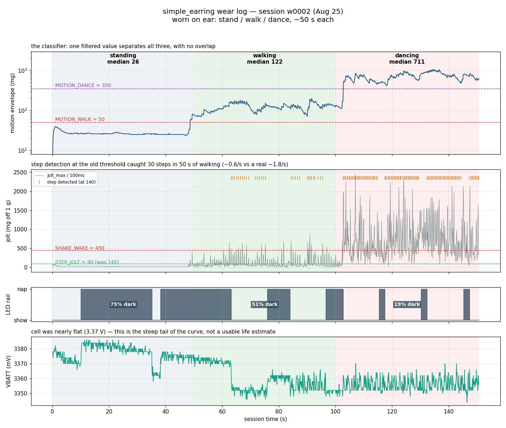

simple_earring — wear log, session w0002
Aug 25 2026 · worn on the ear · stand / walk / dance, ~50 s each ·
1389 records at 10 Hz ·
w0002.csv ·
w0001.csv (29 s handling)

Measured per activity
| activity | motion (p10–p90) | jolt_max median / p90 |
steps found | dark (nap) |
|---|
| standing | 25 – 30 | 26 / 35 | 0 | 75% |
| walking | 84 – 159 | 66 / 281 | 30 (0.6/s) | 51% |
| dancing | 491 – 925 | 582 / 1371 | 98 (2.0/s) | 18% |
The classifier is free. The existing motion
envelope separates all three activities with no overlap whatsoever — walking's
p90 is 159, dancing's p10 is 491. Thresholds now in firmware:
MOTION_WALK = 50, MOTION_DANCE = 350.
Bug the log exposed: on a flat cell the charge gauge computed
0% → a zero-length arc → a completely dark board while charging.
Fixed: the arc is floored at two lit pixels, so "charging" always shows.
Changes this data drove
STEP_JOLT 140 → 90 — the old threshold caught ~0.6 steps/s of
real ~1.8/s walking; standing sits at 26 median, so 90 keeps ~3× margin.- Nap length is now tiered by activity instead of one moving/at-rest flag:
still 25 s, walking 5 s, dancing 2 s. Walking was being napped through
~50% of the time — exactly when people see it.
- A nap started while still now shortens if you start moving mid-nap.
- Log rate steps 10 Hz → 1 Hz after 3 minutes so a full battery run-down
fits the partition.